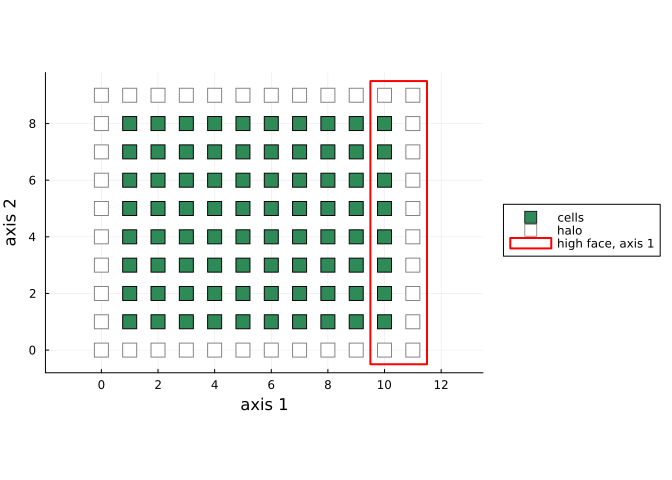
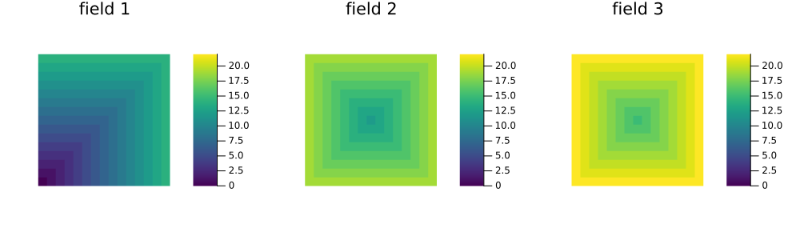

Gluing spaces
Simon Frost
- Overview
- A patch
- Two fields side by side
- Gluing a patch to itself
- Gluing is compositional
- Dynamics restrict to patches
- Fields joined by a road
- Summary
Overview
A landscape is rarely one lattice. It is fields beside fields, a forest beside a crop, farms joined by roads. This vignette builds such landscapes by gluing patches, and shows that the gluing is a colimit: the landscape is determined by its patches and by which cells they share, and the dynamics of a cellular automaton on it are assembled from the dynamics on the patches.
The previous vignette treated a space as a set of cells, each with an ordered list of neighbours. Here the same space is drawn as a slot graph, a C-set (a functor from a small category to sets) with two kinds of part, cells and slots, and two maps from slots to cells:
reader(s)is the cell that slotsbelongs to;read(s)is the cell it reads;- an attribute
index(s)is the slot’s position in the reader’s list.
A patch is a slot graph with a halo: cells beyond its edges that its cells read but that have no slots of their own. Two patches are glued by identifying one’s halo with the other’s edge cells. Because C-sets have all colimits, computed part by part, the glued landscape is a pushout. Its cells are those of the patches with the shared ones identified, and its slots are the slots of the patches side by side. Patches with chosen sets of shared cells (their legs) are structured cospans (Baez and Courser 2020), and Catlab composes them with undirected wiring diagrams, as earlier vignettes composed models.
This is a research extension, beyond the papers the package implements. Every landscape below is checked against a CellularAutomataCore lattice built directly.
ENV["GKSwstype"] = "100"
using CategoricalCellularAutomata
using CellularAutomataCore: CellularAutomataCore, CAProblem, solve, ReferenceBackend, Torus,
Grid, HexGrid, GraphSpace, Life, Moore, Hexagonal, Constant,
Periodic
using Catlab: @relation, apex, legs, nparts, add_parts!, FinFunction
using Plots
using Random
core_run(rule, space, u, n) = solve(CAProblem(rule, u, n; space); backend=ReferenceBackend()).u[end]A patch
lattice_patch makes a patch from a CellularAutomataCore lattice and a neighbourhood. Its cells come first, then the halo: the positions beyond the edges that the neighbourhood reaches. Its legs are its four faces. Each face is a strip two cells deep along one edge: the halo and the first layer of cells. Here is a 10 × 8 field with Moore neighbours:
patch = Grid(10, 8)
P = lattice_patch(patch, Moore(1))
g = apex(P)
(cells=nparts(g, :Cell), slots=nparts(g, :Slot), interior=length(interior_cells(g)),
halo=length(halo_cells(g)), face_sizes=[length(collect(l[:Cell])) for l in legs(P)])(cells = 120, slots = 640, interior = 80, halo = 40, face_sizes = [20, 20, 24, 24])coords = patch_coordinates(patch, Moore(1))
inner, halo = interior_cells(g), halo_cells(g)
face = collect(legs(P)[2][:Cell])
plt = scatter(first.(Tuple.(coords[inner])), last.(Tuple.(coords[inner])); markershape=:square,
markersize=7, color=:seagreen, label="cells", aspect_ratio=1)
scatter!(plt, first.(Tuple.(coords[halo])), last.(Tuple.(coords[halo])); markershape=:square,
markersize=7, color=:white, markerstrokecolor=:gray, label="halo")
(x0, x1), (y0, y1) = extrema(first.(Tuple.(coords[face]))), extrema(last.(Tuple.(coords[face])))
plot!(plt, Shape([x0, x1, x1, x0] .+ [-0.5, 0.5, 0.5, -0.5], [y0, y0, y1, y1] .+ [-0.5, -0.5, 0.5, 0.5]);
fillalpha=0, linecolor=:red, linewidth=2, label="high face, axis 1", legend=:outerright,
xlabel="axis 1", ylabel="axis 2")
plt
Figure 1: A 10 × 8 patch: its cells (filled) and halo (open), with the high face along the first axis (the last layer of cells and the halo beyond it) outlined in red. Gluing this face to another patch’s low face makes each patch’s halo the other’s edge cells.
Two fields side by side
A wiring diagram says which faces meet. Each box is a patch, and its ports are the legs in order: axis 1 low, axis 1 high, axis 2 low, axis 2 high. Two boxes sharing the junction s glue the first field’s high face to the second’s low face:
pair = @relation () begin
P(w, s, a1, a2)
P(s, e, b1, b2)
end
L, ι = glue(pair, Dict(:P => P))
S = NeighbourhoodSpace(apex(L); boundary=0)NeighbourhoodSpace(160 cells, 8 neighbour slots, 1 pinned)glue returns the landscape and, for each box, where its patch’s cells went. Closing the landscape turns the halo that is still unglued into a single cell pinned to 0, as beyond a Constant(0) edge. The result should be a 20 × 8 grid. To check, place each patch’s cells by their coordinates. That gives a map of spaces from the landscape to the core’s grid, and it should preserve neighbours and be a bijection:
function core_cells(L, ι, offsets, patch, nbhd, core)
g = apex(L)
rank = Dict(c => k for (k, c) in enumerate(interior_cells(g)))
coords = patch_coordinates(patch, nbhd)
lin = LinearIndices(size(core))
image = zeros(Int, length(rank))
for (ιb, off) in zip(ι, offsets), c in 1:prod(size(patch))
image[rank[ιb[c]]] = lin[mod1.(Tuple(coords[c]) .+ off, size(core))...]
end
return image
end
grid = Grid(20, 8; boundary=Constant(0))
image = core_cells(L, ι, [(0, 0), (10, 0)], patch, Moore(1), grid)
f = SpaceMorphism(S, neighbourhood_space(grid, Moore(1)), image)
(preserves_neighbours=is_morphism(f), bijective=sort(image) == 1:160)(preserves_neighbours = true, bijective = true)Because the map preserves neighbours, Life on the landscape is Life on the grid. Over 40 steps, pulling the core’s run back along it matches the landscape’s own run:
function agree(rule, S, core, image, n; seed=1)
u = rand(Xoshiro(seed), 0:1, size(core)...)
x = vec(u)[image] # the initial state pulled back
for _ in 1:n
x = apply_local(rule, S, x)
end
return x == vec(core_run(rule, core, u, n))[image]
end
agree(Life(), S, grid, image, 40)trueGluing a patch to itself
A box may meet itself. Joining a patch’s two faces along the first axis makes a cylinder, and joining both pairs of faces makes a torus. These are coequalisers rather than pushouts, but glue computes every colimit the same way:
cylinder = @relation () begin
P(x, x, a, b)
end
torus = @relation () begin
P(x, x, y, y)
end
results = map([(cylinder, Grid(10, 8; boundary=(Periodic(), Constant(0)))),
(torus, Torus(10, 8))]) do (d, core)
L, ι = glue(d, Dict(:P => P))
S = NeighbourhoodSpace(apex(L); boundary=0)
image = core_cells(L, ι, [(0, 0)], patch, Moore(1), core)
f = SpaceMorphism(S, neighbourhood_space(core, Moore(1)), image)
return (halo_left=length(halo_cells(apex(L))), is_map=is_morphism(f),
life_agrees=agree(Life(), S, core, image, 40))
end
(cylinder=results[1], torus=results[2])(cylinder = (halo_left = 20, is_map = true, life_agrees = true), torus = (halo_left = 0, is_map = true, life_agrees = true))On the torus every halo cell has been identified with a cell, so there is no boundary left. The same works on hexagonal patches, whose axial coordinates glue just like square ones:
H = lattice_patch(HexGrid(8, 6), Hexagonal(1))
L, ι = glue(torus, Dict(:P => H))
S = NeighbourhoodSpace(apex(L))
image = core_cells(L, ι, [(0, 0)], HexGrid(8, 6), Hexagonal(1), HexGrid(8, 6))
(is_map=is_morphism(SpaceMorphism(S, neighbourhood_space(HexGrid(8, 6)), image)),
life_agrees=agree(Life(), S, HexGrid(8, 6), image, 40))(is_map = true, life_agrees = true)Gluing is compositional
A landscape can be glued again along the junctions a diagram leaves outside, its outer ports. Two fields make a strip with two outer faces, w and e; two strips glued end to end make four fields in a row. Gluing in stages gives the same landscape as gluing all at once, because colimits compose. In the language of operads, open slot graphs are an algebra of undirected wiring diagrams:
strip = @relation (w, e) begin
P(w, s, a1, a2)
P(s, e, b1, b2)
end
S2, ι2 = glue(strip, Dict(:P => P))
twice = @relation () begin
Q(x, y)
Q(y, z)
end
L4, ι4 = glue(twice, Dict(:Q => S2))
four = @relation () begin
P(a, s1, b1, c1)
P(s1, s2, b2, c2)
P(s2, s3, b3, c3)
P(s3, d, b4, c4)
end
L4′, ι4′ = glue(four, Dict(:P => P))
grid4 = Grid(40, 8; boundary=Constant(0))
offsets = [(0, 0), (10, 0), (20, 0), (30, 0)]
staged = core_cells(L4, [ι4[q][ι2[p]] for q in 1:2 for p in 1:2], offsets, patch, Moore(1), grid4)
direct = core_cells(L4′, ι4′, offsets, patch, Moore(1), grid4)
S4, S4′ = NeighbourhoodSpace(apex(L4); boundary=0), NeighbourhoodSpace(apex(L4′); boundary=0)
(staged=agree(Life(), S4, grid4, staged, 40), direct=agree(Life(), S4′, grid4, direct, 40))(staged = true, direct = true)A block of four fields needs corners. Each corner cell is in the halo of three patches and inside the fourth, and the colimit identifies all four copies through the faces they share:
block = @relation () begin
P(a1, m1, b1, n1)
P(m1, c1, b2, n2)
P(a2, m2, n1, d1)
P(m2, c2, n2, d2)
end
Lb, ιb = glue(block, Dict(:P => P))
grid22 = Grid(20, 16; boundary=Constant(0))
imageb = core_cells(Lb, ιb, [(0, 0), (10, 0), (0, 8), (10, 8)], patch, Moore(1), grid22)
Sb = NeighbourhoodSpace(apex(Lb); boundary=0)
agree(Life(), Sb, grid22, imageb, 40)trueDynamics restrict to patches
Configurations go the other way. A configuration on the landscape restricts to one on each patch, by pulling back along its inclusion. Restrictions to different patches agree wherever the patches share cells, and any family of patch configurations that agrees on shared cells comes from exactly one landscape configuration. The colimit of spaces is a limit of configurations.
The step of a local rule respects this. On each patch’s own cells, the landscape’s step equals the patch’s step, given the halo’s values from the landscape:
x = rand(Xoshiro(3), 0:1, nparts(apex(Lb), :Cell))
y = apply_local(Life(), Sb, x[interior_cells(apex(Lb))])
rank = Dict(c => k for (k, c) in enumerate(interior_cells(apex(Lb))))
life(c, ns) = (s = sum(ns); s == 3 || (c == 1 && s == 2) ? 1 : 0)
halo_zero = copy(x)
halo_zero[halo_cells(apex(Lb))] .= 0
map(1:4) do b
yb = apply_local(life, g, halo_zero[ιb[b]])
return all(c -> yb[c] == y[rank[ιb[b][c]]], interior_cells(g))
end4-element Vector{Bool}:
1
1
1
1This is how parallel simulations of large lattices work: each processor holds a patch and its halo, steps the patch, and exchanges halos with its neighbours. Here that procedure is the statement that configurations form a limit over the diagram of patches.
Fields joined by a road
Patches need not be lattices, nor glued edge to edge. Below, three 15 × 15 fields lie apart, and a road of seven nodes runs past them. Field b is joined to road node 3b - 2: the field’s centre gets a ninth neighbour, the node, and the node one more neighbour, the field’s centre. A small connector patch holds just these links. Its six cells are the three field centres and three road nodes, and its slots are numbered after the slots the cells already have. Gluing the fields, the road and the connector together adds the links to both:
field = Grid(15, 15)
F = lattice_patch(field, Moore(1))
n = nparts(apex(F), :Cell)
centre = findfirst(==(CartesianIndex(8, 8)), patch_coordinates(field, Moore(1)))
faces = [FinFunction(Vector{Int}(collect(l[:Cell])), n) for l in legs(F)]
Fc = OpenSlotGraph{Int}(apex(F), faces..., FinFunction([centre], n))
path = GraphSpace([[2], [1, 3], [2, 4], [3, 5], [4, 6], [5, 7], [6]])
road = slot_graph(neighbourhood_space(path))
R = OpenSlotGraph{Int}(road, FinFunction([1, 4, 7], 7))
link = SlotGraph{Int}()
add_parts!(link, :Cell, 6) # field centres 1-3, road nodes 4-6
add_parts!(link, :Slot, 6; reader=[1, 2, 3, 4, 5, 6], read=[4, 5, 6, 1, 2, 3],
index=[9, 9, 9, 2, 3, 2]) # after a centre's 8 and a node's 1, 2, 1
C = OpenSlotGraph{Int}(link, FinFunction([1], 6), FinFunction([2], 6), FinFunction([3], 6),
FinFunction([4, 5, 6], 6))
farms = @relation () begin
F(a1, b1, c1, d1, f1)
F(a2, b2, c2, d2, f2)
F(a3, b3, c3, d3, f3)
Road(r)
Link(f1, f2, f3, r)
end
Lr, ιr = glue(farms, Dict(:F => Fc, :Road => R, :Link => C))
Sr = NeighbourhoodSpace(apex(Lr); boundary=0)
lengths = length.(Sr.neighbours[1:free_cells(Sr)])
(cells=free_cells(Sr), neighbour_counts=sort(unique(lengths)),
centres_with_nine=count(==(9), lengths))(cells = 682, neighbour_counts = [2, 3, 8, 9], centres_with_nine = 3)Now let a blight spread from the corner of the first field. A cell is infected once any neighbour is. It crosses each field at one cell a step, and travels between fields only by the road:
spread(c, ns) = c == 1 || any(==(1), ns) ? 1 : 0
rank = Dict(c => k for (k, c) in enumerate(interior_cells(apex(Lr))))
cell(b, c) = rank[ιr[b][c]] # cell c of field b in the landscape
x = zeros(Int, free_cells(Sr))
x[cell(1, 1)] = 1 # the corner (1, 1) of the first field
first_infected = fill(-1, free_cells(Sr))
first_infected[cell(1, 1)] = 0
for t in 1:60
global x = apply_local(spread, Sr, x)
first_infected[(x .== 1) .& (first_infected .< 0)] .= t
end
times = [reshape([first_infected[cell(b, c)] for c in 1:225], 15, 15) for b in 1:3]
(reach_centres=[t[8, 8] for t in times], all_infected_by=[maximum(t) for t in times])(reach_centres = [7, 12, 15], all_infected_by = [14, 19, 22])plot([heatmap(t'; clims=(0, maximum(maximum.(times))), aspect_ratio=1, title="field $b",
framestyle=:none, c=:viridis) for (b, t) in enumerate(times)]...;
layout=(1, 3), size=(1000, 300))
Figure 2: Time of first infection in three fields joined only by a road: the blight starts in the corner of field 1, reaches its centre in 7 steps, then travels along the road and spreads out from each later field’s centre.
Summary
| construction | as a colimit | checked against |
|---|---|---|
| two fields side by side | pushout along a shared face | Grid(20, 8) |
| cylinder, torus | coequaliser of a patch’s faces | Grid with periodic and constant edges, Torus (square and hexagonal) |
| strips of strips, blocks | colimits of wiring diagrams, composed | Grid(40, 8), Grid(20, 16) |
| fields and a road | pushout with a connector that adds slots | neighbour counts; dynamics |
Gluing identifies cells and never slots, so glue computes the colimit by union-find, in time linear in the size of the patches. With algorithm = :catlab it calls Catlab’s general colimit of structured cospans instead. The test suite checks that the two agree, but Catlab’s is far slower beyond a few hundred cells.
Baez, John C., and Kenny Courser. 2020. “Structured Cospans.” Theory and Applications of Categories 35 (48): 1771–822. https://tac.mta.ca/tac/volumes/35/48/35-48abs.html.